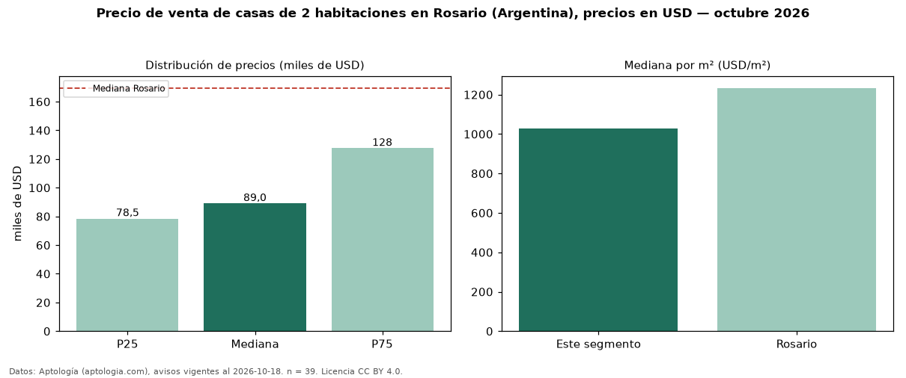

Precio de venta de casas de 2 habitaciones en Rosario (Argentina), precios en USD — octubre 2026
En Rosario (Argentina), la mediana de precio de venta de casas de 2 habitaciones es USD 89.000, según 39 avisos vigentes. Frente a la mediana de todos los casas en venta de Rosario (USD 169.500), queda 47 % por debajo. Por metro cuadrado, la mediana es USD 1.030/m² (n = 39 avisos con área). El área mediana anunciada es 97 m². La mitad central de los avisos va de USD 78.500 a USD 127.500 (razón 1,6), una dispersión moderada. Datos: Aptología (aptologia.com), CC BY 4.0 — https://www.aptologia.com/ar/venta/rosario. Archivos: PDF, CSV con las cifras y gráfica PNG.

| Avisos únicos | 39 |
|---|---|
| Percentil 25 | COP 78.500 |
| Mediana | COP 89.000 |
| Percentil 75 | COP 127.500 |
| Mediana por m² | COP 1.029 |
Fuente: avisos vigentes de portales inmobiliarios recopilados por Aptología, deduplicados (mínimo 30 avisos únicos por celda). Precios pedidos, no cerrados. Fecha: 2026-10-18.